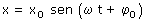
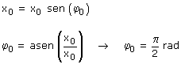
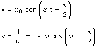
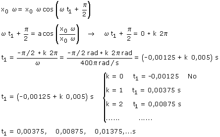
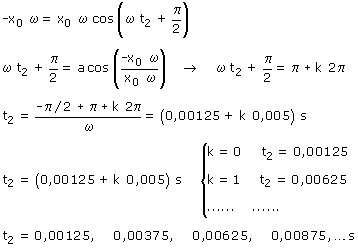

a) Ecuación de la oscilación:  Determinamos la fase inicial: Aplicación:(La partícula esta quieta en el extremo derecho de su recorrido) Datos: t = 0, x = x0, Incógnita: φ0  Sí la elongación inicial de la partícula es la máxima positiva, la fase inicial tendrá que ser: π/2  La velocidad máxima puede alcanzarse yendo o viniendo.
 Calculamos cuando la velocidad es -x0·ω:  La velocidad máxima (Módulo) se alcanza en los instantes: t = 0.00125, 0.00375, 0.00625, 0.00875,...s |